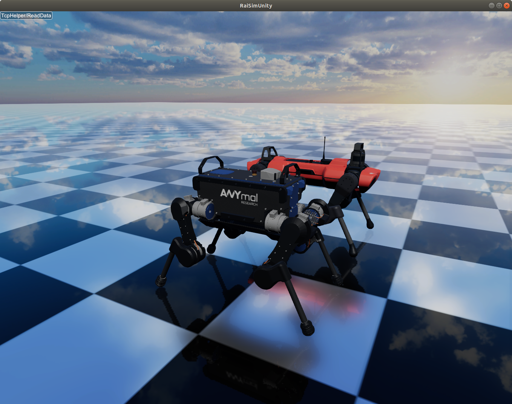
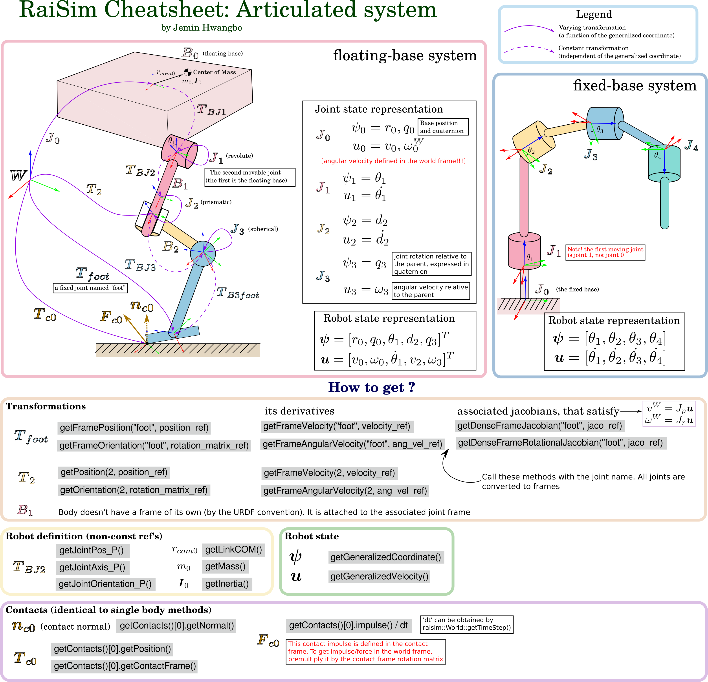

Articulated Systems


ANYmal robots (B and C versions) simulated in RaiSim.
An articulated system comprises multiple bodies interconnected via joints. There are two kinds of articulated systems: kinematic trees and closed-loop systems. A kinematic tree has no loops, so each body has exactly one parent joint. Consequently, the number of joints in a kinematic tree equals the number of bodies; the root body of a floating-base system is attached to the world by a floating joint.
A closed-loop system has one or more loops, i.e., there are multiple paths from a body to the root. RaiSim’s algorithmic backbone, the Articulated Body Algorithm, cannot solve the dynamics of a closed-loop system directly. Instead, RaiSim simulates a spanning tree of the system and closes the loops with pin or equality constraints, which it eliminates exactly before the contact solve. These pages focus on kinematic trees. Closed-loop systems are described in Closed-Loop Systems.
In kinematic trees, since each body has only one parent joint, the index of a body always matches that of its parent joint. Here, a “body” denotes a rigid body composed of one or more “links” that are rigidly connected to each other via fixed joints.
TL;DR

A vector-graphics version is available as articulatedSystem.pdf.